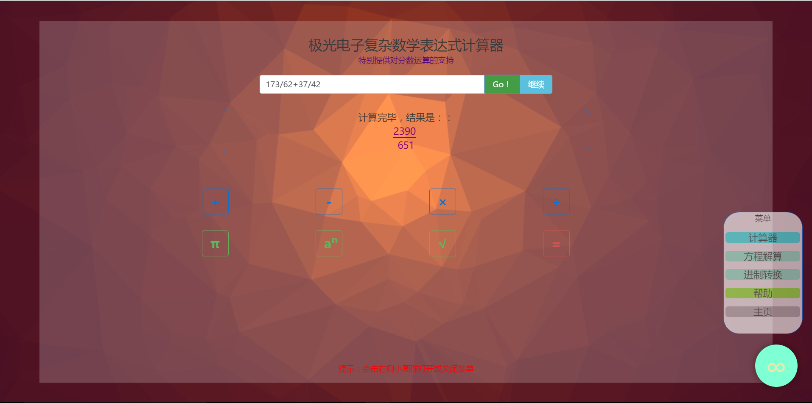
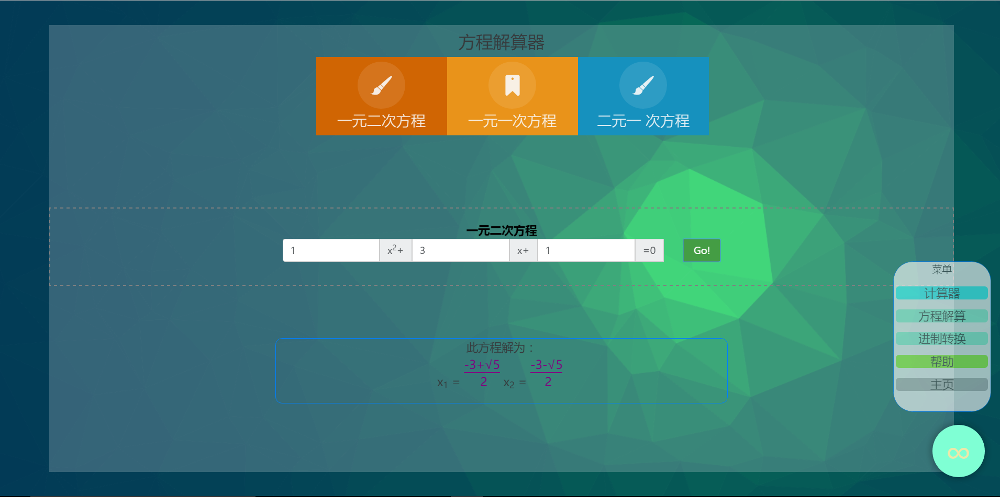
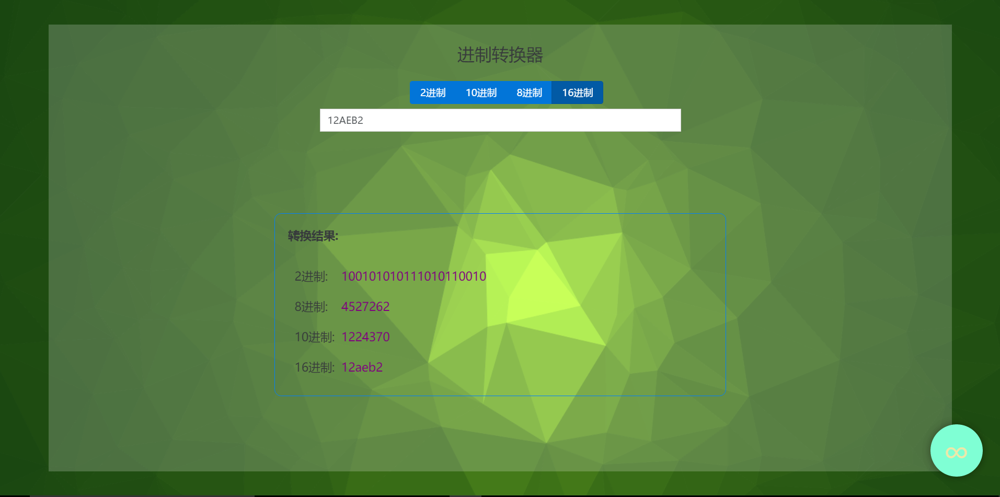

关于极光数学助手
这是一个节省你的生命的应用。编写此应用耗费了大量的时间和精力，旨在让你的生活更轻松
这是一个节省你的生命的应用。编写此应用耗费了大量的时间和精力，旨在让你的生活更轻松
对技术的追求，让梦想家蜕变成为创造者。
只需输入一道长长的算式，转瞬之间准确无误的计算结果便出现在眼前；只需将方程各项的系数输入，便可以立刻知晓复杂方程的解，这可能吗？
只要一个网址，便可以在世界各地用任何能够联网的设备（手机、电脑、平板等）使用这神奇的程序，这可能吗？
我想让这个程序，拥有无比绚丽的界面，又有着细腻的人性化设计，而且完全不需要花时间下载，完全不考虑操作系统的问题，这可能吗？
这一切，真的可能吗？
付出了无数的辛劳与汗水之后，我可以自豪的说，这是可能的。
你眼前的这个HTML5网页应用，就是我的成果。虽然开发时间很紧张，它必然有着不少的缺陷，但我认为，这必定是我的创客之路上一抹美丽的风景。
且听我细细道来。
从前，小小的我经常被数学计算困扰，所以我常常幻想着能有一个应用帮我计算各种复杂的数学题，然而那时的我在编程技术上一无所知，我也一直以为这是个无法实现的愿望。
我忘记了到底是怎么接触编程的，但我一接触便迷上了它。众人口中枯燥无味的程序设计，我却为之整日痴迷钻研，慢慢的我掌握了不少编程的技能。
学校微机课还在讲着1998年的VB6编程，用着早已被微软官方废弃的FrontPage制作网页时，互联网又一波革命性的大潮已经汹涌袭来。
HTML5，2008年出台了第一份草案，现已被几乎所有网页浏览器支持。HTML5，代表着未来方向的新一代网页开发技术。它打破了传统网页只能用来展示图片和文字内容的限制，使得网站可以做电脑程序和手机app能做的任何事，大家常用的微信小程序便是基于HTML5技术。
转眼HTML已经成为应用开发的主流，各大互联网巨头都在力推HTML浏览器应用的发展，近几年来，随着HTML5的功能日益强大，浏览器应用已经占据了新应用的半壁江山。而曾经叱咤风云的Flash、Windows程序由于绝大多数移动客户端的不支持而几近淘汰。
追求新知的我，当然不会放过过HTML5的学习，这时，我又想起了小时候的愿望，我决定试着实现它。
本程序全部由我开发完成，一切程序的功能实现算法都是独立原创编写。本程序开发历时间非常紧张，全部在课余时间完成，熬夜到凌晨是家常便饭，也因为时间的原因，原本计划加入本应用的部分功能（如函数绘制）仅仅完成了实验版本，界面和兼容性存在严重的问题，遗憾地无法和大家见面。但是。本程序完成测试的复杂算式计算器，方程解算器和进制转换器仍然有着极高的实现难度和使用价值 。
界面的美化是本程序的一大着力点。为了让用户喜欢我们的界面，我用大量的时间实现了很多业界首次采用的形式。
本程序独创地采用了3D交互式背景效果，使用美国的WebGL图形库绘制3D背景，随着用户鼠标的移动，便会着凉屏幕上不同的区域，光与影的效果十分美观绚丽。而且，我们还实现了随着界面的切换，背景的颜色也会发生改变。
本应用独创了悬浮球式弹出菜单。弹出按钮悬浮在屏幕右下角的一个蓝色小球，它的脉冲动画小果是采用新一代的CSS3动画技术编写出来的。点击它便会动画效果浮现菜单。
我们为几乎所有的按钮点击都添加了动画效果，过渡十分自然美观。
核心代码位置（js/calc.js、js/do_calc.js、do.html）
1. 不同于任何计算器，本计算器全面支持分数计算。数学计算中其实绝大部分都是分数计算，然而目前没有任何计算器可以计算出分数结果。我特地编写了一整套分数计算的代码完美实现了分数的运算
2. 一般的计算器一次只能计算一步，而本计算器支持复杂运算。你可以输入各种运算符号以及括号，不论输入多长，都可以瞬间计算出答案。
3. 不同于任何计算器，算式不需要按屏幕上的按键，直接用键盘输入即可，我编写的算式分析结算程序可以完美解算。
4. 人性化的向导系统，只要点击帮助按钮，应用就会指引你如何操作，避免因为界面和普通计算器差异较大而不知所措的问题。
核心代码位置（js/fangcheng.js、js/do_fangcheng.js、do.html）
本应用支持解算一元一次，一元二次，二元一次方程。不同于大多数计算机程序采用二分法求解（这样只能算出近似的小数），本程序完全模拟人工求解的步骤，最后的计算结果包含根号和分数，做到绝对精确，这种答案符合数学要求（如果写近似小数得不到认可）
核心代码位置（js/fangcheng.js、js/do_fangcheng.js、do.html）
作为程序开发者，经常和不同的进制打交道，迫切需要方便的进制转换工具，于是我便编写了此功能。
1. 输入限制功能，不同的进制下，带转换数的输入框可以输入的字符就不同，例如2进制只能输入0或1，我的输入限制函数可以组织用户输入违规字符，防止程序出错。
2. 即时自动转换功能，只需在输入框内输入数字，应用立刻自动显示各种进制的转换后的结果
本程序为纯HTML5开发，开发工具为Microsoft Visual Studio Community 2015 ，全部网页代码均为独立开发。
本应用引用库 :1.jQuery 2.1.4 2.Bootstrap 3&4 3.WebGL
本应用各功能模块对应源代码